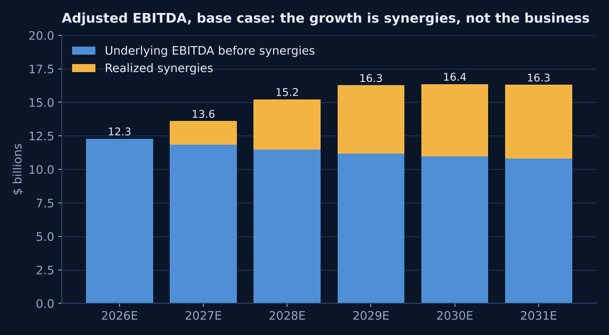
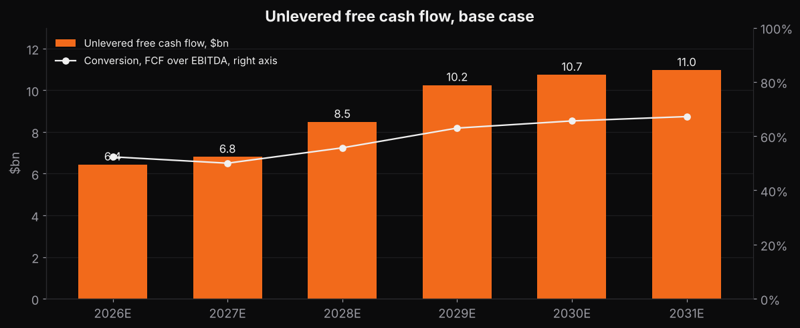
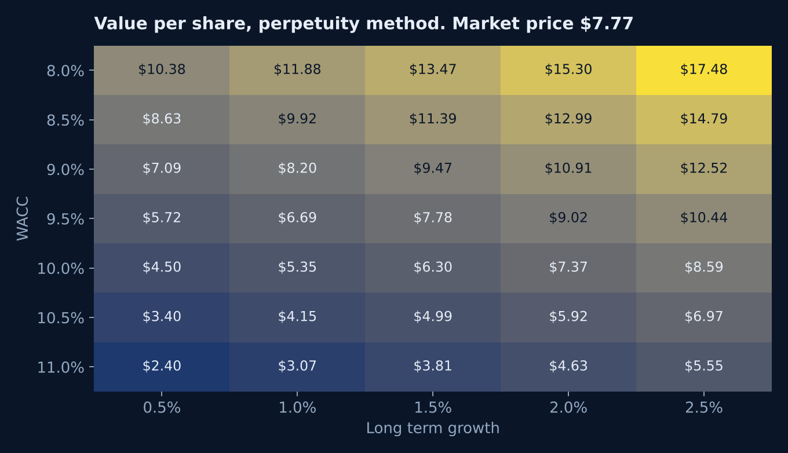
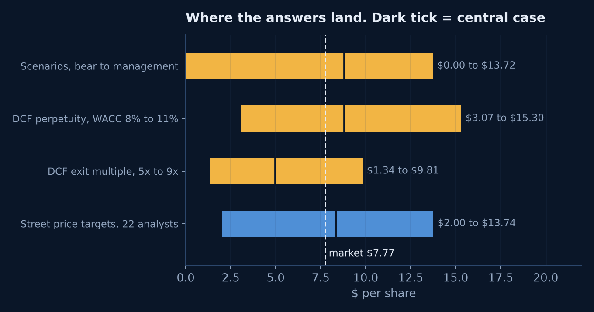

Project
Skydance DCF model.
The anchor of the media set. What is the company that just bought Warner Bros. Discovery worth, and what has to be true for the shares to be worth more than $7.77 under $89 billion of debt?
Why this company
A liability management case study that became a leverage case study
I started this as a Paramount model. I covered the Paramount Skydance tender at Finsight and wanted to value a company whose bonds I had watched trade. By the time I built it, Paramount Skydance had closed its $110 billion purchase of Warner Bros. Discovery, renamed itself Skydance Corporation and moved to the NYSE as SKYD. So the model values the combined company: about $70 billion of revenue, $89 billion of gross debt, 5.04 billion shares.
The deal was paid for with $47 billion of new equity at $12 a share and about $52 billion of new debt. The stock closed at $7.77 on October 23. S&P cut the company to BB and the old Paramount bonds yield 10 to 13 percent. The discount rate, not the forecast, is the hard part.
The result
A small premium on one method and a discount on the other
Implied value per share, base case, perpetuity method at a 9.2 percent cost of capital and 1.5 percent long term growth. The market closed at $7.77 on October 23, 2026.
Implied value per share, base case, exit multiple method at 7 times 2031 EBITDA. The two methods disagree, and that gap is the honest answer.
Range across the sensitivity grid, cost of capital 8 to 11 percent and growth 1 to 2 percent. Street price targets run $2 to $13.74.
Bear case equity value. If half the synergies show up and linear television falls 11 percent a year, the $84 billion of net debt is worth more than the business.
Share of enterprise value that sits in the terminal value. High, which means the number depends on what the company looks like after 2031, not on the next five years.
Synergies assumed realized by 2030 in the base case, against a management target of at least $6 billion within three years. Almost all of the EBITDA growth in the model is this line.
These are model outputs under stated assumptions. Nothing on this page is a recommendation to buy or sell anything.
How it is built
Pro forma from two companies' filings, with every input on one sheet
- Base year. Paramount Skydance's fiscal 2025 results plus Warner Bros. Discovery's, giving $66 billion of revenue and $12 billion of adjusted EBITDA, which matches the pro forma 8-K and the Street's 2026 consensus.
- Revenue. Three lines, streaming, linear networks and studios, each with its own growth path. Streaming grows 9 percent fading to 4, linear falls 8 percent fading to 6, studios grow 3.
- EBITDA. An underlying margin that drifts down as linear shrinks, plus a separate synergy line so the reader can see exactly how much of the value is the merger math.
- Cash flow. EBITDA less stock compensation, integration cash costs, cash taxes at 23 percent, capex at 2.1 percent of revenue and a content and working capital line. Stock compensation is treated as a real cost.
- Discount rate. A 0.9 unlevered media beta relevered for a 2.2 debt to equity ratio gives a 2.4 levered beta and a 15.7 percent cost of equity. An 8 percent cost of debt, blended from the new 7.05 and 8.875 percent notes and the legacy unsecured yields, at market weights gives a 9.2 percent WACC.
- Equity bridge. Enterprise value less $84 billion of net debt at close and $1 billion of noncontrolling interests, over 5.04 billion shares. The 471 million warrants struck at $12 dilute only when the value is above $12, by the treasury stock method.
- Three scenarios on one switch: base, bear and management's plan.
- Four peers and a credit comp on the same template. Netflix, Disney, Comcast and Fox, built the same way, then leverage, coverage and cushion across all five. See Media DCF models and credit comps.
Charts
The model in four pictures

Where the EBITDA growth comes fromUnderlying EBITDA before synergies drifts down as linear television shrinks. Every dollar of growth from 2026 to 2031 is realized synergies. 
Unlevered free cash flowConversion rises from about half of EBITDA to two thirds as integration costs roll off. Management's own target is more than $10 billion of free cash flow after interest by 2030, which this model does not reach. 
Cost of capital against long term growthOne point of discount rate moves the value by $3 to $4 a share. The company's own leverage makes the cost of capital the least certain input. 
Four answers on one lineThe two DCF methods, the three scenarios and the Street's targets, next to the market price. The market sits inside every range.


What I got wrong first
The company I set out to value no longer existed
My first pass used Paramount Skydance's own filings: $30 billion of revenue, $15 billion of debt, 1.1 billion shares. Those are the only numbers the SEC has. The company that trades today is twice that size and has six times the debt. I would have had a precise answer for a company nobody can buy. So I rebuilt the base year from both companies' filings and took the debt and share count from the October 2026 8-Ks.
What would change the answer
In order of how much they move it
- Synergy realization. The base case takes $5.4 billion of the $6 billion target by 2030. Each $1 billion of run rate synergies is worth about $1.50 a share.
- Linear decline. Three points a year faster, which is what Warner Bros. Discovery's linear networks did in the second quarter of 2026, takes the base case most of the way to the bear case.
- The discount rate. Market weights give 9.2 percent. If management reaches its 3.0 times leverage target by 2029, the equity weight rises and so does the WACC, which lowers the value even as the business gets safer.
- Content cash spend. It sits inside the working capital line at about 1 percent of revenue and I could not source it. The first combined quarterly report, due in November 2026, will say whether that is right.
Download
The model and its sources
Blue cells are inputs. Pick a scenario in Inputs cell C5. The Sources sheet lists all 18 sources with links, mostly SEC filings. Analyst judgments that have no source are labelled as such where they sit. Nothing in the model comes from a Bloomberg Terminal or from any employer.